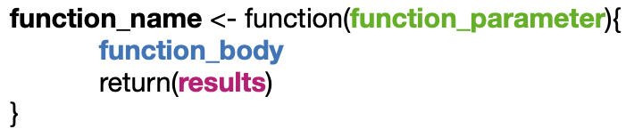

Introduction
Why R?
- It’s free!
- easy to install / maintain
- R runs on all the platforms. Just name it and you got it!! Windows PC, Mac, Linux to name a few
- thousands of free libraries to use in areas of finance, natural language processing, cluster analysis, optimization, prediction, high performance computing etc.
- R is the most comprehensive statistical analysis package as new technology and ideas often appear first in R.
- easy to process big files and analyse huge amounts of data
- integrated data visualization tools, even dynamic
- integrates with many programming languages like Java, Ruby, C++, Python
- fast, and even faster with C++ integration via Rcpp.
- generation of interactive applications (shiny apps)
- easy to get help
- huge R community in the web
- stackoverflow with a lot of tags like tidyverse, dplyr, ggplot2 etc.
- rbloggers
- writing books, blogs, html sites in R with ease
What is R?
R is a language and environment for statistical computing and graphics. It is a GNU project which is similar to the S language and environment which was developed at Bell Laboratories (formerly AT&T, now Lucent Technologies) by John Chambers and colleagues. R can be considered as a different implementation of S. There are some important differences, but much code written for S runs unaltered under R.
- an effective data handling and storage facility,
- a suite of operators for calculations on arrays, in particular matrices,
- a large, coherent, integrated collection of intermediate tools for data analysis,
- graphical facilities for data analysis and display either on-screen or on hardcopy, and
- a well-developed, simple and effective programming language which
includes conditionals, loops, user-defined
recursive functions and input and output facilities.
RStudio IDE (https://rstudio.com)
RStudio is an integrated development environment (IDE). It is critical tool for writing and exucuting R-code.
RStudio was build for R but it supports also:
- RMarkdown (HTML, PDF, Word Documents, and slide shows)
- C++
- Python
- SQL
- Stan
- HTML
screenshot from RStudio cheat sheet
- Console to run R, with syntax highlighter
- Editor to work with scripts
- Viewer for data / plots / website
- Package management (including building)
- Autocompletion using TAB
- Cheatsheets
- Git integration for versioning
- Inline outputs (>= v1.03)
- Keyboard shortcuts
- Notebooks
Don’t mix up R and RStudio.
R needs to be installed first.
And for windows PC install RTools as well since it contains several additional system tools like compiler and zip executables.
Useful Rstudio shortcuts
replace Cmd by Ctrl for PC
| shortcut | function |
|---|---|
| Cmd + Enter | run code |
| tab | auto-complete code |
| Ctrl + Alt + ↑ or ↓ | multi-line edition |
| Cmd + Alt + ↑ or ↓ | copy line up / down |
| Alt + ↑ or ↓ | move line up / down |
| Alt+- | <- (assign e.g. a value to a variable) |
| Alt + ↑ + K | quick view of keyboard shortcuts |
| Cmd + ↑ + P | shortcut for command palette |
edit shortcuts in RStudio
R - Help
Getting help is easy.
| help | what it does | output |
|---|---|---|
?mean |
get the help for mean() function (you can also mark the function and
press F1 |
Generic function for the (trimmed) arithmetic mean. Usage: mean(x, …) |
help.search("mean") |
search all help files accross all installed packages for a word or phrase | output is list of several packages containing the word or phrase … |
help(package="dplyr") |
redirection to the help page of the package | will show the help of all functions in the package |
At some point you will stuck. Please use google and try to
explain your problem in the simplest way and tag it with
R.
R - Packages
R packages are a collection of R functions, complied code and sample data. They are stored under a directory called “library” in the R environment. By default, R installs a set of packages during installation other packages must be installed after R installation.
Where do I get R - Packages
CRAN
In RStudio you can use the Packages register card and hit the Install button.
reliable: package is checked during submission process
MRAN for Windows users
Bioconductor
dedicated to biology. status of famous limma package
typical install:
source("https://bioconductor.org/biocLite.R")
biocLite("limma")Github
easy install thanks to devtools. status
# install.packages("devtools")
devtools::install_github("tidyverse/readr")MetaCRAN
R - Using Packages
| syntax | what it does |
|---|---|
install.packages("dplyr") |
download and install package dplyr from CRAN |
library("dplyr") |
load the package into the session, making all its functions available to use |
dplyr::select |
use a particular function form the package |
data(iris) |
loads a build in dataset into the environment |
citation("dplyr") |
print the reference for citation |
The double colon (::) is very important, because there may be multiple functions with the same name in multiple packages. The double colon operator allows you to specify the specific function you want:
package::functionname e.g. dplyr::select()
R - Working directory
| syntax | what it does |
|---|---|
getwd() |
print out the current working directory (where inputs are found and outputs are sent) |
setwd("path") |
change the current working directory to path |
USE projects in RStudio to set the working directory to the folder you are working in.
Projects
always use projects !!!
Using Projects
RStudio projects make it straightforward to divide your work into multiple contexts, each with their own working directory, workspace, history, and source documents.
With projects file path are relative from your project and are not relying on your system.
example:
you generated a R-Script loading files >> doing some calculations >> writing some output.
your R-project folder: R_analysis
your working directory absolute: c:/user/admin/documents/2020_projects/03_subproject/measurements/R_analysis
your working directory relative (project directory): R_analysis
When you open a project the working directory is always the proejct directory.
If you did your scripting in a project you can give someone else the project folder and he or she doesn’t have to worry about the paths that are used because they are relative.
Creating projects
RStudio projects are associated with R working directories. You can create an RStudio project:
- In a brand new directory
- In an existing directory where you already have R code and data
- By cloning a version control (Git or Subversion) repository
To create a new project use the Create Project command (available on
the Projects menu and on the global toolbar): 
When a new project is created RStudio:
- Creates a project file (with an .Rproj extension) within the project directory. This file contains various project options (discussed below) and can also be used as a shortcut for opening the project directly from the filesystem.
- Creates a hidden directory (named .Rproj.user) where project-specific temporary files (e.g. auto-saved source documents, window-state, etc.) are stored. This directory is also automatically added to .Rbuildignore, .gitignore, etc. if required.
- Loads the project into RStudio and display its name in the Projects toolbar (which is located on the far right side of the main toolbar)
suggest project folder structure
# my_project
# ├── data <folder>
# │ ├── raw_data <subfolder>
# │ └── processed_data <subfolder>
# │ └── source_data <subfolder>
# ├── figures <folder>
# ├── R_scritps <folder>
# ├── README.md
# ├── run_analyses.RWorking with projects
Opening Projects
There are several ways to open a project:
- Using the Open Project command (available from both the Projects menu and the Projects toolbar) to browse for and select an existing project file (e.g. MyProject.Rproj).
- Selecting a project from the list of most recently opened projects (also available from both the Projects menu and toolbar).
- Double-clicking on the project file within the system shell (e.g. Windows Explorer, OSX Finder, etc.).
When a project is opened within RStudio the following actions are taken:
- A new R session (process) is started
- The .Rprofile file in the project’s main directory (if any) is sourced by R
- The .RData file in the project’s main directory is loaded (if project options indicate that it should be loaded).
- The .Rhistory file in the project’s main directory is loaded into the RStudio History pane (and used for Console Up/Down arrow command history).
- The current working directory is set to the project directory.
- Previously edited source documents are restored into editor tabs
- Other RStudio settings (e.g. active tabs, splitter positions, etc.) are restored to where they were the last time the project was closed.
Quitting a Project
When you are within a project and choose to either Quit, close the project, or open another project the following actions are taken:
- .RData and/or .Rhistory are written to the project directory (if current options indicate they should be)
- The list of open source documents is saved (so it can be restored next time the project is opened)
- Other RStudio settings (as described above) are saved.
- The R session is terminated.
R-script header
Use a intuitive Script header. This is important especially if the script needs be shared with colleagues.
Default script header (suggestion):
################################################
## Project:
## Script purpose:
## Date:
## Author:
## Version:
## Version Release notes:
##################################################Example:
################################################
## Project: Rho DIA-MS proteome data analysis
## Script purpose: analysis of Rho-mutant and HG001 proteome data and reveal differential proteome levels
## Date: 12.09.2018
## Author: Stephan Michalik
## Version: 1.00
## Version Release notes:
##################################################R basics
The base R cheat sheet ( base R cheat sheet ) covers a broad range of the points of the chapter and is worth looking at.
writing code
The # sign is used to out-comment code. (code will NOT run)
use Cmd + Shift+ R for comment a new code section
This will appear in the drop down level menu in the scripting window for navigation.
DO NOT use ” ” (spaces) in variables etc., use always “_” or “.” instead of spaces !!!
The best is to use “_” since “.” is used in other programming languages. In python the “.” means look inside the space that is before the dot for code to execute.
So if intermixing codes becomes more feasable this might be very disturbing.
how to use help
#help for mean
?meanor mark the function (mean) and press F1
Arithmetic with R
In its most basic form, R can be used as a simple calculator. Consider the following arithmetic operators:
+: addition
-: subtraction
*: multiplication
/: division
^or**: exponentiation%/%: integer division%%: remainder of integer division
R will:
- first perform exponentiation
- then multiplications and/or divisions
- and finally additions and/or subtractions.
If you need to change the priority during the evaluation, use
parentheses – i.e. ( and ) – to group
calculations.
# An addition
5 + 5 ## [1] 10# A subtraction
5 - 5 ## [1] 0# A multiplication
3 * 5## [1] 15 # A division
(5 + 5) / 2 ## [1] 5# Exponentiation
2^5## [1] 32# integer division
10%/%3## [1] 3# remainder of integer division
10%%3## [1] 1# sequence
1:10## [1] 1 2 3 4 5 6 7 8 9 10seq(2, 3, by=0.5)## [1] 2.0 2.5 3.0# repeats
rep(1:2, times=3)## [1] 1 2 1 2 1 2rep(1:2, each=3)## [1] 1 1 1 2 2 2other function:
mean()= averagemedian()= mediansum()= sumsqrt()= square rootIQR()= interquartile rangevar()= variancecov()= covariancecor()= correlationquantile()= produces sample quantiles corresponding to the given probabilities- … (please see e.g. R stats packages for available basic function)
Variable assignment
A basic concept in (statistical) programming is called a variable.
A variable allows you to store a value (e.g. 4) or an object (e.g. a function description) in R. You can then later use this variable’s name to easily access the value or the object that is stored within this variable.
You can assign a value 4 to a variable
my_var with the command
# An addition
my_var <- 4 # my_var = 4 can alos be used but "<-" is the more universal correct assignment operator
# Print out the value of the variable my_var
my_var## [1] 4# Assign a value to the variables my_apples and my_oranges
my_apples <- 5
my_oranges <- 1
# Add these two variables together
my_apples + my_oranges## [1] 6# Create the variable my_fruit
my_fruit <- my_apples + my_oranges
my_fruit # return result again## [1] 6functions
R is about functions, when you write mean(x = ...) you
use the mean function to calculate an arithmetic mean over given
numbers.
A function is always devided into 3 sections:
- function parameter
- function body
- return statement

Lets say we would like to have a function converting temperatures.
Here an example from (https://swcarpentry.github.io/r-novice-inflammation/02-func-R/index.html)
# function for converting Celsius to Kelvin
celsius_to_kelvin <- function(temp_C) {
temp_K <- temp_C + 273.15
return(temp_K)
}NOTE: It is not necessary to include the return statement. R automatically returns the last variable of the body of the function. But it is good practice the return statement.
# freezing point of water in Kelvin
celsius_to_kelvin(0)## [1] 273Now lets write a more complex function. Here we write a function calculating Fahrenheit to Celsius and using that function we wrote a more complex function calculating Fahrenheit to Kelvin.
# function calculate Celsius from Fahrenheit
fahrenheit_to_celsius <- function(temp_F) {
temp_C <- (temp_F - 32) * 5 / 9
return(temp_C)
}
# nested function: calculate Kelvin from Fahrenheit
fahrenheit_to_kelvin <- function(temp_F) {
temp_C <- fahrenheit_to_celsius(temp_F)
temp_K <- celsius_to_kelvin(temp_C)
return(temp_K)
}
# freezing point of water in Kelvin
fahrenheit_to_kelvin(32.0)## [1] 273nested function
The above example showed a function inside a function. You can also achieve the same in your code when you nest the functions:
# freezing point of water in Kelvin
# Fahrenheit > Celsius --> Celsius > Kelvin
celsius_to_kelvin(fahrenheit_to_celsius(32.0))## [1] 273Basic data types in R
R works with numerous data types. Some of the most basic types to get started are:
Decimal values like 4.5 are called numerics.
Natural numbers like 4 are called integers. Integers are also numerics.
Boolean values (TRUE or FALSE) are called logical.
Text (or string) values are called characters.
Note how the quotation marks on the right indicate that “some text” is a character.
# Declare variables of different types
my_numeric <- 42
my_character <- "universe"
my_logical <- FALSE Special cases
NA # not available, missing data
NA_real_
NA_integer_
NA_character_
NA_complex_
NULL # empty
-Inf/Inf # infinite valuesmissing and infinite
c(NA_real_, 2.45, 45.67)## [1] NA 2.45 45.67c(Inf, 2.45, 45.67)## [1] Inf 2.45 45.67What’s that data type?
when you added 5 + "six", you got an error due to a
mismatch in data types? You can avoid such embarrassing situations by
checking the data type of a variable beforehand. You can do this with
the class() function, as the code on the right shows.
# Declare variables of different types
my_numeric <- 42
my_character <- "universe"
my_logical <- FALSE
# Check class of my_numeric
class(my_numeric)## [1] "numeric"# Check class of my_character
class(my_character)## [1] "character"# Check class of my_logical
class(my_logical)## [1] "logical"creating a vector
In R, you create a vector with the combine function c().
You place the vector elements separated by a comma between the
parentheses. For example:
numeric_vector <- c(1, 2, 3)
character_vector <- c("a", "b", "c")
boolean_vector <- c(TRUE,FALSE,TRUE)Naming a vector
As a data analyst, it is important to have a clear view on the data that you are using. Understanding what each element refers to is therefore essential.
In the previous exercise, we created a vector with your winnings over the week. Each vector element refers to a day of the week but it is hard to tell which element belongs to which day. It would be nice if you could show that in the vector itself.
You can give a name to the elements of a vector with the names() function. Have a look at this example:
some_vector <- c("John Doe", "poker player")
#output before naming
some_vector## [1] "John Doe" "poker player"names(some_vector) <- c("Name", "Profession")
#output after naming
some_vector## Name Profession
## "John Doe" "poker player"#same result can be directly achieved by naming inside c()
some_vector1 <- c(Name = "John Doe", Profession= "poker player")
some_vector1## Name Profession
## "John Doe" "poker player"vector functions
#generate vector x
x <- c(3,2,5,6,10,9,7,8,1,4,4,5,1,2,4,6)
# Return x sorted. table(x)
sort(x)## [1] 1 1 2 2 3 4 4 4 5 5 6 6 7 8 9 10# See counts of values
table(x)## x
## 1 2 3 4 5 6 7 8 9 10
## 2 2 1 3 2 2 1 1 1 1# Return x reversed
rev(x)## [1] 6 4 2 1 5 4 4 1 8 7 9 10 6 5 2 3#See unique values
unique(x)## [1] 3 2 5 6 10 9 7 8 1 4Matrix
What is a matrix?
In R, a matrix is a collection of elements of the same data type (numeric, character, or logical) arranged into a fixed number of rows and columns. Since you are only working with rows and columns, a matrix is called two-dimensional.
You can construct a matrix in R with the matrix()
function. Consider the following example:
matrix(1:9, byrow = TRUE, nrow = 3)## [,1] [,2] [,3]
## [1,] 1 2 3
## [2,] 4 5 6
## [3,] 7 8 9In the matrix() function:
The first argument is the collection of elements that R will arrange
into the rows and columns of the matrix. Here, we use 1:9
which is a shortcut for c(1, 2, 3, 4, 5, 6, 7, 8, 9). The
argument byrow indicates that the matrix is filled by the rows. If we
want the matrix to be filled by the columns, we just place
byrow = FALSE. The third argument nrow indicates that the
matrix should have three rows.
Naming a matrix
To help you remember what is stored in a matrix, you would like to add the names for the rows. Not only does this help you to read the data, but it is also useful to select certain elements from the matrix.
Similar to vectors, you can add names for the rows and the columns of a matrix
rownames(my_matrix) <- row_names_vector
colnames(my_matrix) <- col_names_vectorData frame
A data frame is used for storing data tables. It is a list of vectors of equal length. For example, the following variable df is a data frame containing three vectors n, s, b.
what´s the difference between a matrix and a data.frame?
Both matrix and data frame are 2 dimensional data structure. While matrix is homogeneous, data frame is not.
R won’t automatically treat dataframe rows as vectors, because a dataframe’s columns can be of different types. But if e.g. all columns are numeric (no characters, factors, etc), you can convert it to a numeric matrix yourself, using the as.matrix() function, and then treat its rows as vectors.
Extract specific information from a data.frame
We will use the build in data.frame mtcars for the example.
select some rows or columns:
# the data.frame mtcars
mtcars## mpg cyl disp hp drat wt qsec vs am gear carb
## Mazda RX4 21.0 6 160.0 110 3.90 2.62 16.5 0 1 4 4
## Mazda RX4 Wag 21.0 6 160.0 110 3.90 2.88 17.0 0 1 4 4
## Datsun 710 22.8 4 108.0 93 3.85 2.32 18.6 1 1 4 1
## Hornet 4 Drive 21.4 6 258.0 110 3.08 3.21 19.4 1 0 3 1
## Hornet Sportabout 18.7 8 360.0 175 3.15 3.44 17.0 0 0 3 2
## Valiant 18.1 6 225.0 105 2.76 3.46 20.2 1 0 3 1
## Duster 360 14.3 8 360.0 245 3.21 3.57 15.8 0 0 3 4
## Merc 240D 24.4 4 146.7 62 3.69 3.19 20.0 1 0 4 2
## Merc 230 22.8 4 140.8 95 3.92 3.15 22.9 1 0 4 2
## Merc 280 19.2 6 167.6 123 3.92 3.44 18.3 1 0 4 4
## Merc 280C 17.8 6 167.6 123 3.92 3.44 18.9 1 0 4 4
## Merc 450SE 16.4 8 275.8 180 3.07 4.07 17.4 0 0 3 3
## Merc 450SL 17.3 8 275.8 180 3.07 3.73 17.6 0 0 3 3
## Merc 450SLC 15.2 8 275.8 180 3.07 3.78 18.0 0 0 3 3
## Cadillac Fleetwood 10.4 8 472.0 205 2.93 5.25 18.0 0 0 3 4
## Lincoln Continental 10.4 8 460.0 215 3.00 5.42 17.8 0 0 3 4
## Chrysler Imperial 14.7 8 440.0 230 3.23 5.34 17.4 0 0 3 4
## Fiat 128 32.4 4 78.7 66 4.08 2.20 19.5 1 1 4 1
## Honda Civic 30.4 4 75.7 52 4.93 1.61 18.5 1 1 4 2
## Toyota Corolla 33.9 4 71.1 65 4.22 1.83 19.9 1 1 4 1
## Toyota Corona 21.5 4 120.1 97 3.70 2.46 20.0 1 0 3 1
## Dodge Challenger 15.5 8 318.0 150 2.76 3.52 16.9 0 0 3 2
## AMC Javelin 15.2 8 304.0 150 3.15 3.44 17.3 0 0 3 2
## Camaro Z28 13.3 8 350.0 245 3.73 3.84 15.4 0 0 3 4
## Pontiac Firebird 19.2 8 400.0 175 3.08 3.85 17.1 0 0 3 2
## Fiat X1-9 27.3 4 79.0 66 4.08 1.94 18.9 1 1 4 1
## Porsche 914-2 26.0 4 120.3 91 4.43 2.14 16.7 0 1 5 2
## Lotus Europa 30.4 4 95.1 113 3.77 1.51 16.9 1 1 5 2
## Ford Pantera L 15.8 8 351.0 264 4.22 3.17 14.5 0 1 5 4
## Ferrari Dino 19.7 6 145.0 175 3.62 2.77 15.5 0 1 5 6
## Maserati Bora 15.0 8 301.0 335 3.54 3.57 14.6 0 1 5 8
## Volvo 142E 21.4 4 121.0 109 4.11 2.78 18.6 1 1 4 2# get just the first row of the data.frame
# [x,y] --> x==rows / y==columns
mtcars[1,]## mpg cyl disp hp drat wt qsec vs am gear carb
## Mazda RX4 21 6 160 110 3.9 2.62 16.5 0 1 4 4# get just the first column of the data.frame
mtcars[,1]## [1] 21.0 21.0 22.8 21.4 18.7 18.1 14.3 24.4 22.8 19.2 17.8 16.4 17.3 15.2 10.4
## [16] 10.4 14.7 32.4 30.4 33.9 21.5 15.5 15.2 13.3 19.2 27.3 26.0 30.4 15.8 19.7
## [31] 15.0 21.4 # or use the "$" sign for return e.g. "mpg" column
mtcars$mpg## [1] 21.0 21.0 22.8 21.4 18.7 18.1 14.3 24.4 22.8 19.2 17.8 16.4 17.3 15.2 10.4
## [16] 10.4 14.7 32.4 30.4 33.9 21.5 15.5 15.2 13.3 19.2 27.3 26.0 30.4 15.8 19.7
## [31] 15.0 21.4# get just the first three rows of the data.frame
mtcars[1:3,]## mpg cyl disp hp drat wt qsec vs am gear carb
## Mazda RX4 21.0 6 160 110 3.90 2.62 16.5 0 1 4 4
## Mazda RX4 Wag 21.0 6 160 110 3.90 2.88 17.0 0 1 4 4
## Datsun 710 22.8 4 108 93 3.85 2.32 18.6 1 1 4 1# get just the first three columns of the data.frame
mtcars[,1:3]## mpg cyl disp
## Mazda RX4 21.0 6 160.0
## Mazda RX4 Wag 21.0 6 160.0
## Datsun 710 22.8 4 108.0
## Hornet 4 Drive 21.4 6 258.0
## Hornet Sportabout 18.7 8 360.0
## Valiant 18.1 6 225.0
## Duster 360 14.3 8 360.0
## Merc 240D 24.4 4 146.7
## Merc 230 22.8 4 140.8
## Merc 280 19.2 6 167.6
## Merc 280C 17.8 6 167.6
## Merc 450SE 16.4 8 275.8
## Merc 450SL 17.3 8 275.8
## Merc 450SLC 15.2 8 275.8
## Cadillac Fleetwood 10.4 8 472.0
## Lincoln Continental 10.4 8 460.0
## Chrysler Imperial 14.7 8 440.0
## Fiat 128 32.4 4 78.7
## Honda Civic 30.4 4 75.7
## Toyota Corolla 33.9 4 71.1
## Toyota Corona 21.5 4 120.1
## Dodge Challenger 15.5 8 318.0
## AMC Javelin 15.2 8 304.0
## Camaro Z28 13.3 8 350.0
## Pontiac Firebird 19.2 8 400.0
## Fiat X1-9 27.3 4 79.0
## Porsche 914-2 26.0 4 120.3
## Lotus Europa 30.4 4 95.1
## Ford Pantera L 15.8 8 351.0
## Ferrari Dino 19.7 6 145.0
## Maserati Bora 15.0 8 301.0
## Volvo 142E 21.4 4 121.0Perform comparisons
Perform comparisons and use them for subsetting:
==equal to!=not equal to<smaller<=smaller or equal>greater>=greater or equal!is not&,&&and|,||or!negation
comment:
&& and || are what is called
“short circuiting”. That means that they will not evaluate the
second operand if the first operand is enough to determine the value of
the expression.
For example if the first operand to && is false then there is
no point in evaluating the second operand, since it can’t change the
value of the expression (false && true and false
&& false are both false). The same goes for
|| when the first operand is true.
#generate a vector from 1 to 6
z = 1:6
z## [1] 1 2 3 4 5 6# z bigger than 2 and smaller than 5
(z > 2) & (z < 5)## [1] FALSE FALSE TRUE TRUE FALSE FALSEz[(z>2) & (z<5)]## [1] 3 4#now the same with &&
(z > 2) && (z < 5)## [1] FALSE#this is equivalent to:
(z[1] > 2) & (z[1] < 5)## [1] FALSE#it will just check the first valuesubsetting
#subset / filter the table with base R
# choose from mtcars data.frame the cars with 4 gears
mtcars[which(mtcars$gear==4),]## mpg cyl disp hp drat wt qsec vs am gear carb
## Mazda RX4 21.0 6 160.0 110 3.90 2.62 16.5 0 1 4 4
## Mazda RX4 Wag 21.0 6 160.0 110 3.90 2.88 17.0 0 1 4 4
## Datsun 710 22.8 4 108.0 93 3.85 2.32 18.6 1 1 4 1
## Merc 240D 24.4 4 146.7 62 3.69 3.19 20.0 1 0 4 2
## Merc 230 22.8 4 140.8 95 3.92 3.15 22.9 1 0 4 2
## Merc 280 19.2 6 167.6 123 3.92 3.44 18.3 1 0 4 4
## Merc 280C 17.8 6 167.6 123 3.92 3.44 18.9 1 0 4 4
## Fiat 128 32.4 4 78.7 66 4.08 2.20 19.5 1 1 4 1
## Honda Civic 30.4 4 75.7 52 4.93 1.61 18.5 1 1 4 2
## Toyota Corolla 33.9 4 71.1 65 4.22 1.83 19.9 1 1 4 1
## Fiat X1-9 27.3 4 79.0 66 4.08 1.94 18.9 1 1 4 1
## Volvo 142E 21.4 4 121.0 109 4.11 2.78 18.6 1 1 4 2# choose from mtcars data.frame the cars with 4 gears and min 100 hp
mtcars[which(mtcars$gear==4 & mtcars$hp>=100),]## mpg cyl disp hp drat wt qsec vs am gear carb
## Mazda RX4 21.0 6 160 110 3.90 2.62 16.5 0 1 4 4
## Mazda RX4 Wag 21.0 6 160 110 3.90 2.88 17.0 0 1 4 4
## Merc 280 19.2 6 168 123 3.92 3.44 18.3 1 0 4 4
## Merc 280C 17.8 6 168 123 3.92 3.44 18.9 1 0 4 4
## Volvo 142E 21.4 4 121 109 4.11 2.78 18.6 1 1 4 2same can be achieved with subset() function
#subset / filter the table with base R
# choose from mtcars data.frame the cars with 4 gears
subset(x = mtcars,mtcars$gear==4)## mpg cyl disp hp drat wt qsec vs am gear carb
## Mazda RX4 21.0 6 160.0 110 3.90 2.62 16.5 0 1 4 4
## Mazda RX4 Wag 21.0 6 160.0 110 3.90 2.88 17.0 0 1 4 4
## Datsun 710 22.8 4 108.0 93 3.85 2.32 18.6 1 1 4 1
## Merc 240D 24.4 4 146.7 62 3.69 3.19 20.0 1 0 4 2
## Merc 230 22.8 4 140.8 95 3.92 3.15 22.9 1 0 4 2
## Merc 280 19.2 6 167.6 123 3.92 3.44 18.3 1 0 4 4
## Merc 280C 17.8 6 167.6 123 3.92 3.44 18.9 1 0 4 4
## Fiat 128 32.4 4 78.7 66 4.08 2.20 19.5 1 1 4 1
## Honda Civic 30.4 4 75.7 52 4.93 1.61 18.5 1 1 4 2
## Toyota Corolla 33.9 4 71.1 65 4.22 1.83 19.9 1 1 4 1
## Fiat X1-9 27.3 4 79.0 66 4.08 1.94 18.9 1 1 4 1
## Volvo 142E 21.4 4 121.0 109 4.11 2.78 18.6 1 1 4 2# choose from mtcars data.frame the cars with 4 gears and min 100 hp
subset(x = mtcars,mtcars$gear==4 & mtcars$hp>=100)## mpg cyl disp hp drat wt qsec vs am gear carb
## Mazda RX4 21.0 6 160 110 3.90 2.62 16.5 0 1 4 4
## Mazda RX4 Wag 21.0 6 160 110 3.90 2.88 17.0 0 1 4 4
## Merc 280 19.2 6 168 123 3.92 3.44 18.3 1 0 4 4
## Merc 280C 17.8 6 168 123 3.92 3.44 18.9 1 0 4 4
## Volvo 142E 21.4 4 121 109 4.11 2.78 18.6 1 1 4 2Recap: Vectors, Matrices, Data frames
- Vectors (one dimensional array): can hold numeric, character or logical values. The elements in a vector all have the same data type.
- Matrices (two dimensional array): can hold numeric, character or logical values. The elements in a matrix all have the same data type.
- Data frames (two-dimensional objects): can hold numeric, character or logical values. Within a column all elements have the same data type, but different columns can be of different data type.
Lists
A list in R is similar to your to-do list at work or school: the different items on that list most likely differ in length, characteristic, and type of activity that has to do be done.
A list in R allows you to gather a variety of objects under one name (that is, the name of the list) in an ordered way. These objects can be matrices, vectors, data frames, even other lists, etc. It is not even required that these objects are related to each other in any way.
You could say that a list is some kind super data type: you can store practically any piece of information in it!
create a list:
Let us create our first list! To construct a list you use the
function list():
my_list <- list(comp1, comp2 ...)
# Vector with numerics from 1 up to 10
my_vector <- 1:10
# Matrix with numerics from 1 up to 9
my_matrix <- matrix(1:9, ncol = 3)
# First 10 elements of the built-in data frame mtcars
my_df <- mtcars[1:10,]
# Construct list with these different elements:
my_list <- list(vector = my_vector,
matrix = my_matrix,
data.frame = my_df)
my_list## $vector
## [1] 1 2 3 4 5 6 7 8 9 10
##
## $matrix
## [,1] [,2] [,3]
## [1,] 1 4 7
## [2,] 2 5 8
## [3,] 3 6 9
##
## $data.frame
## mpg cyl disp hp drat wt qsec vs am gear carb
## Mazda RX4 21.0 6 160 110 3.90 2.62 16.5 0 1 4 4
## Mazda RX4 Wag 21.0 6 160 110 3.90 2.88 17.0 0 1 4 4
## Datsun 710 22.8 4 108 93 3.85 2.32 18.6 1 1 4 1
## Hornet 4 Drive 21.4 6 258 110 3.08 3.21 19.4 1 0 3 1
## Hornet Sportabout 18.7 8 360 175 3.15 3.44 17.0 0 0 3 2
## Valiant 18.1 6 225 105 2.76 3.46 20.2 1 0 3 1
## Duster 360 14.3 8 360 245 3.21 3.57 15.8 0 0 3 4
## Merc 240D 24.4 4 147 62 3.69 3.19 20.0 1 0 4 2
## Merc 230 22.8 4 141 95 3.92 3.15 22.9 1 0 4 2
## Merc 280 19.2 6 168 123 3.92 3.44 18.3 1 0 4 4#get data out of the list
# Vector with numerics from 1 up to 10
my_vector <- 1:10
# Matrix with numerics from 1 up to 9
my_matrix <- matrix(1:9, ncol = 3)
# First 10 elements of the built-in data frame mtcars
my_df <- mtcars[1:10,]
# Construct list with these different elements and naming of the list:
my_list <- list(vector = my_vector,
matrix = my_matrix,
data.frame = my_df)
# naming can be done also after creating a list using "names(my_list) <- c("name1", "name2")"
#get the data.frame
my_list$data.frame## mpg cyl disp hp drat wt qsec vs am gear carb
## Mazda RX4 21.0 6 160 110 3.90 2.62 16.5 0 1 4 4
## Mazda RX4 Wag 21.0 6 160 110 3.90 2.88 17.0 0 1 4 4
## Datsun 710 22.8 4 108 93 3.85 2.32 18.6 1 1 4 1
## Hornet 4 Drive 21.4 6 258 110 3.08 3.21 19.4 1 0 3 1
## Hornet Sportabout 18.7 8 360 175 3.15 3.44 17.0 0 0 3 2
## Valiant 18.1 6 225 105 2.76 3.46 20.2 1 0 3 1
## Duster 360 14.3 8 360 245 3.21 3.57 15.8 0 0 3 4
## Merc 240D 24.4 4 147 62 3.69 3.19 20.0 1 0 4 2
## Merc 230 22.8 4 141 95 3.92 3.15 22.9 1 0 4 2
## Merc 280 19.2 6 168 123 3.92 3.44 18.3 1 0 4 4 #or
my_list[[3]]## mpg cyl disp hp drat wt qsec vs am gear carb
## Mazda RX4 21.0 6 160 110 3.90 2.62 16.5 0 1 4 4
## Mazda RX4 Wag 21.0 6 160 110 3.90 2.88 17.0 0 1 4 4
## Datsun 710 22.8 4 108 93 3.85 2.32 18.6 1 1 4 1
## Hornet 4 Drive 21.4 6 258 110 3.08 3.21 19.4 1 0 3 1
## Hornet Sportabout 18.7 8 360 175 3.15 3.44 17.0 0 0 3 2
## Valiant 18.1 6 225 105 2.76 3.46 20.2 1 0 3 1
## Duster 360 14.3 8 360 245 3.21 3.57 15.8 0 0 3 4
## Merc 240D 24.4 4 147 62 3.69 3.19 20.0 1 0 4 2
## Merc 230 22.8 4 141 95 3.92 3.15 22.9 1 0 4 2
## Merc 280 19.2 6 168 123 3.92 3.44 18.3 1 0 4 4 #or
my_list[["data.frame"]]## mpg cyl disp hp drat wt qsec vs am gear carb
## Mazda RX4 21.0 6 160 110 3.90 2.62 16.5 0 1 4 4
## Mazda RX4 Wag 21.0 6 160 110 3.90 2.88 17.0 0 1 4 4
## Datsun 710 22.8 4 108 93 3.85 2.32 18.6 1 1 4 1
## Hornet 4 Drive 21.4 6 258 110 3.08 3.21 19.4 1 0 3 1
## Hornet Sportabout 18.7 8 360 175 3.15 3.44 17.0 0 0 3 2
## Valiant 18.1 6 225 105 2.76 3.46 20.2 1 0 3 1
## Duster 360 14.3 8 360 245 3.21 3.57 15.8 0 0 3 4
## Merc 240D 24.4 4 147 62 3.69 3.19 20.0 1 0 4 2
## Merc 230 22.8 4 141 95 3.92 3.15 22.9 1 0 4 2
## Merc 280 19.2 6 168 123 3.92 3.44 18.3 1 0 4 4#get data.frame and just the first row
my_list[["data.frame"]][1,]## mpg cyl disp hp drat wt qsec vs am gear carb
## Mazda RX4 21 6 160 110 3.9 2.62 16.5 0 1 4 4#get data.frame and just the first column
my_list[["data.frame"]]$mpg## [1] 21.0 21.0 22.8 21.4 18.7 18.1 14.3 24.4 22.8 19.2 #or
#get data.frame and just the first column
my_list[["data.frame"]][,1]## [1] 21.0 21.0 22.8 21.4 18.7 18.1 14.3 24.4 22.8 19.2 #or
my_list[["data.frame"]][,"mpg"]## [1] 21.0 21.0 22.8 21.4 18.7 18.1 14.3 24.4 22.8 19.2add more data to a list:
To conveniently add elements to lists you can use the
c() function, that you also used to build vectors:
ext_list <- c(my_list , my_val) This will simply
extend the original list, my_list, with the component
my_val. This component gets appended to the end of the list. If
you want to give the new list item a name, you just add the name as you
did before:
ext_list <- c(my_list, my_name = my_val)
Factor
What’s a factor and why would you use it?
In this chapter you dive into the wonderful world of factors.
The term factor refers to a statistical data type used to store categorical variables. The difference between a categorical variable and a continuous variable is that a categorical variable can belong to a limited number of categories. A continuous variable, on the other hand, can correspond to an infinite number of values.
It is important that R knows whether it is dealing with a continuous or a categorical variable, as the statistical models you will develop in the future treat both types differently. (You will see later why this is the case.)
A good example of a categorical variable is sex. In many circumstances you can limit the sex categories to “Male” or “Female”. (Sometimes you may need different categories. For example, you may need to consider chromosomal variation, hermaphroditic animals, or different cultural norms, but you will always have a finite number of categories.)
To create factors in R, you make use of the function
factor(). First thing that you have to do is create a
vector that contains all the observations that belong to a limited
number of categories. For example, sex_vector contains the sex of 5
different individuals:
sex_vector <- c("Male","Female","Female","Male","Male")It is clear that there are two categories, or in R-terms ‘factor levels’, at work here: “Male” and “Female”.
The function factor() will encode the vector as a
factor:
sex_vector <- c("Male","Female","Female","Male","Male")
sex_vector## [1] "Male" "Female" "Female" "Male" "Male"factor_sex_vector <- factor(sex_vector)
factor_sex_vector## [1] Male Female Female Male Male
## Levels: Female MaleThere are two types of categorical variables: a nominal categorical variable and an ordinal categorical variable.
A nominal variable is a categorical variable without an implied order. This means that it is impossible to say that ‘one is worth more than the other’.
For example, think of the categorical variable animals_vector with the categories “Elephant”, “Giraffe”, “Donkey” and “Horse”. Here, it is impossible to say that one stands above or below the other. (Note that some of you might disagree ;-) ).
In contrast, ordinal variables do have a natural ordering. Consider for example the categorical variable temperature_vector with the categories: “Low”, “Medium” and “High”. Here it is obvious that “Medium” stands above “Low”, and “High” stands above “Medium”.
Factor levels
When you first get a data set, you will often notice that it contains
factors with specific factor levels. However, sometimes you will want to
change the names of these levels for clarity or other reasons. R allows
you to do this with the function levels():
levels(factor_vector) <- c("name1", "name2",...)A good illustration is the raw data that is provided to you by a survey. A common question for every questionnaire is the sex of the respondent. Here, for simplicity, just two categories were recorded, “M” and “F”. (You usually need more categories for survey data; either way, you use a factor to store the categorical data.)
survey_vector <- c("M", "F", "F", "M", "M")Recording the sex with the abbreviations “M” and “F” can be convenient if you are collecting data with pen and paper, but it can introduce confusion when analyzing the data. At that point, you will often want to change the factor levels to “Male” and “Female” instead of “M” and “F” for clarity.
Watch out: the order with which you assign the levels is important !!!
If you type levels(factor_survey_vector), you’ll see
that it outputs [1] “F” “M”. If you don’t specify the levels of
the factor when creating the vector, R will automatically assign them
alphabetically. To correctly map “F” to “Female” and “M” to “Male”, the
levels should be set to c("Female", "Male"), in this
order.
Summarizing a factor
After finishing this course, one of your favorite functions in R will
be summary(). This will give you a quick overview of the
contents of a variable:
summary(my_var)## Min. 1st Qu. Median Mean 3rd Qu. Max.
## 4 4 4 4 4 4Going back to our survey, you would like to know how many
“Male” responses you have in your study, and how many
“Female” responses. The summary() function gives
you the answer to this question.
loops
R is very useful in performing repitive tasks, e.g. if we want to save barplots over conditions for each protein in a protein quantification table we would to that with a loop. In a loop R will execute the instructions inside the loop a given number of times or until a specified condition is met.
There are 3 main types of loops in R:
- for loop
- while loop
- repeat loop
for loop
Most common loop is the for loop.
for loop basic skeleton:
for(var in seq) {expr}
for (i in 1:5) {
print(i)
}## [1] 1
## [1] 2
## [1] 3
## [1] 4
## [1] 5while loop
Use the while loop when you want to keep looping until a specific logical condition is satisfied.
You can use these kind of loops when e.g. optimizing parameters for a regression.
while loop basic skeleton:
while(cond){expr}
i <- 0
while (i <= 4) {
i <- i + 1
print(i)
}## [1] 1
## [1] 2
## [1] 3
## [1] 4
## [1] 5repeat loop
The repeat loop is used to iterate over your code multiple number of times until a break is achieved.
This loop is not often used. Instead the while loop is used more frequently.
x <- 1
repeat {
print(x)
x = x+1
if (x == 6){
break
}
}## [1] 1
## [1] 2
## [1] 3
## [1] 4
## [1] 5